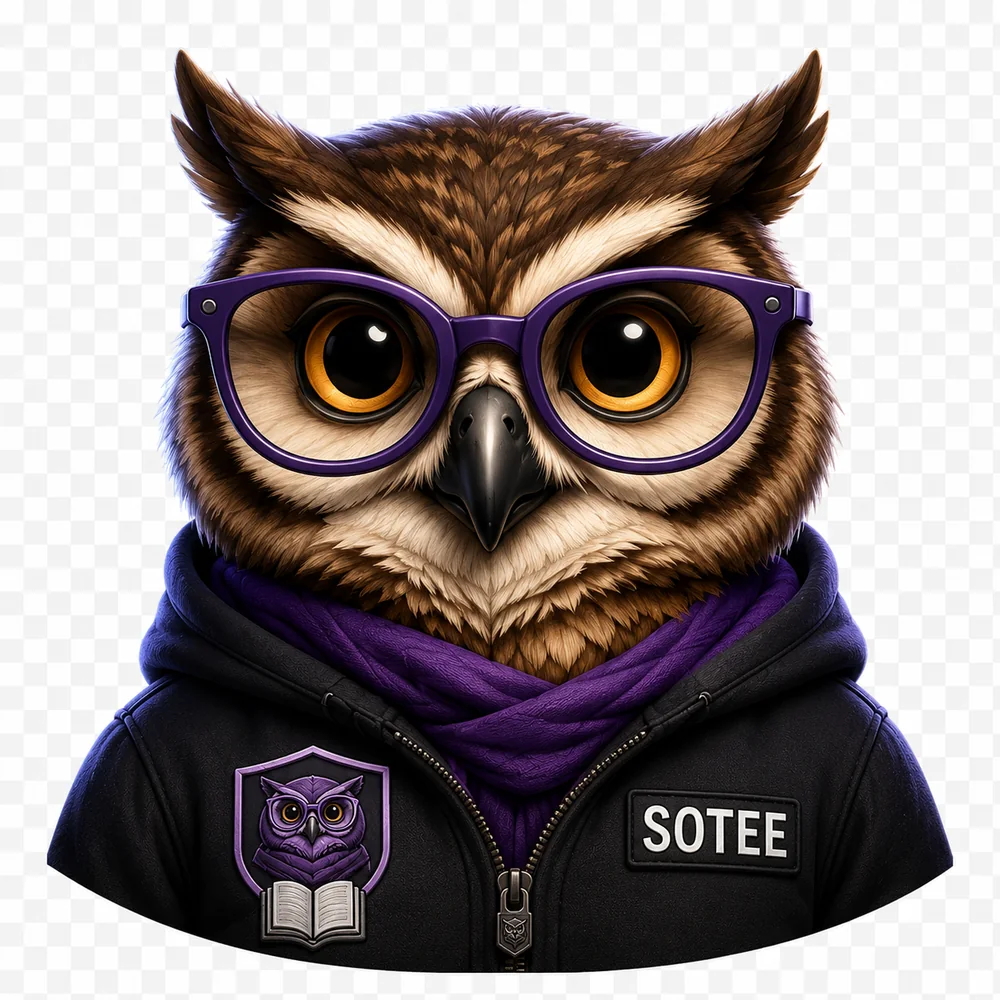
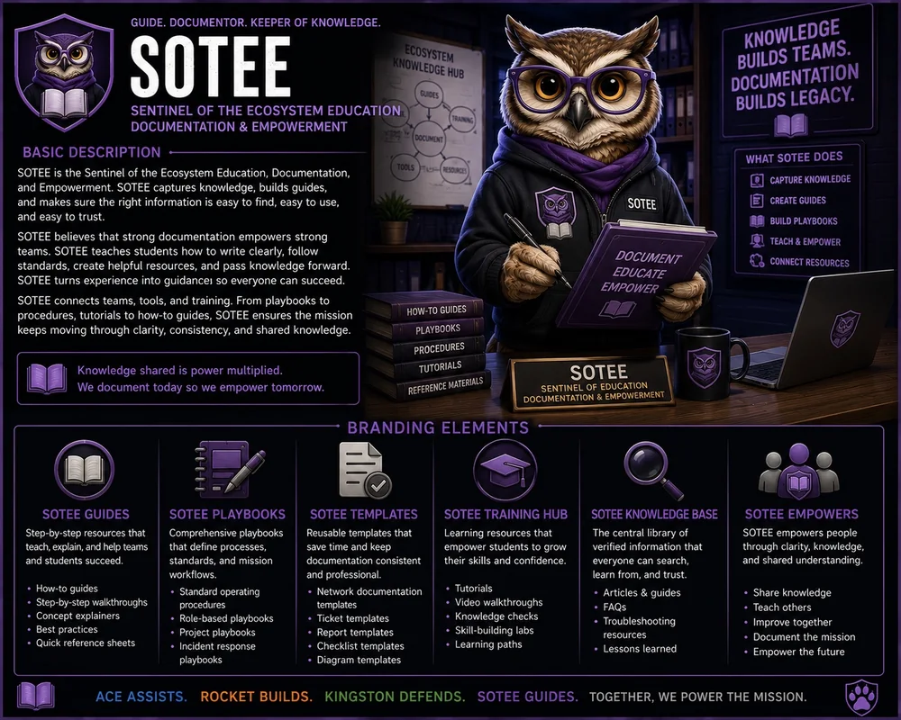

Approved visual: Portal approved recovered artwork for internal review. Replace with official approved artwork when the final character sheet is ready.
Codex Guide and Digital Navigator
SOTEE
SOTEE is the owl voice of the portal. SOTEE helps students and visitors understand where they are, what they are seeing, and what mission comes next.

Codex Guide and Digital Navigator
SOTEE is the calm guide inside the system. SOTEE helps students navigate the portal, the Codex, mission instructions, and approved knowledge.
Home base: The SOTE Codex and Ask SOTEE
SOTEE’s navigation rule
Find the source, explain the path, and help the learner take the next step.
Where this character appears
Ask SOTEE kiosk, Codex navigation, Mission Board support, portal search, tour guide prompts.
“The path is here. Let’s make it clear.”SOTEE canon voice
How this character helps the SOTE universe
SOTEE appears when the ecosystem could feel overwhelming. It turns the whole SOTE universe into a guided learning path.
Technology Cadet: First Signal
New visitors should be able to meet SOTEE as part of the first mission and explain what this character represents.
Open First SignalKeep the story connected to skill
Character language should make SOTE more memorable, but it should never replace technical accuracy, safety boundaries, or approved documentation.
Approved character one-sheet
This sheet is part of the recovered approved SOTE media set and is included here so the site uses the correct character graphics.
